the emptiness
of new york
analog photography project
on urban spaces
For this Analog Photography project my desire was to portray how life and interaction can change the urban spaces and the New York City’s landscapes by showing emptiness on different scenarios of a New Yorker’s daily routine.
Whether they are touristic or not, their blanks are there to show that the city has a beauty under the layer of people that cherishes it everyday.
This first 5 photographs belong to the first studies I did for this project and the ones that follow are the pieces that I elected to incorporate the final collection of 12 photographs.
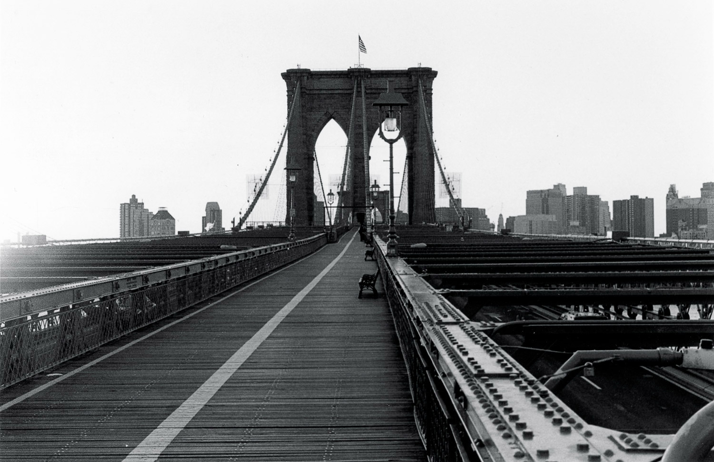
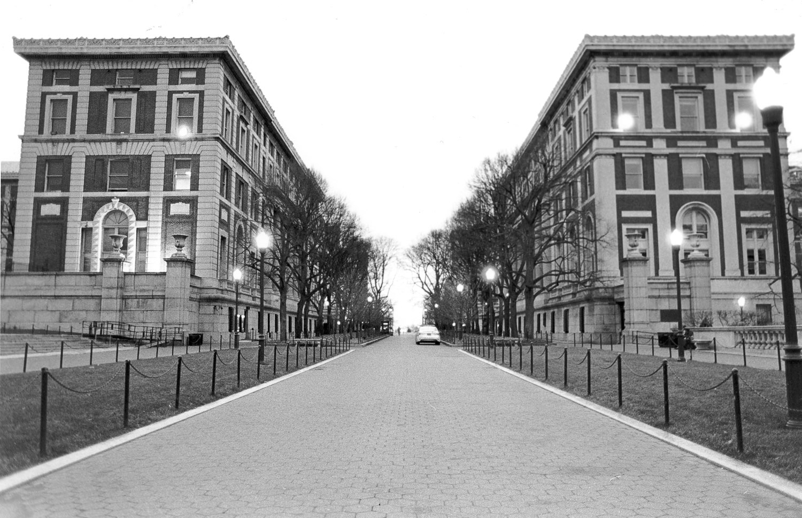
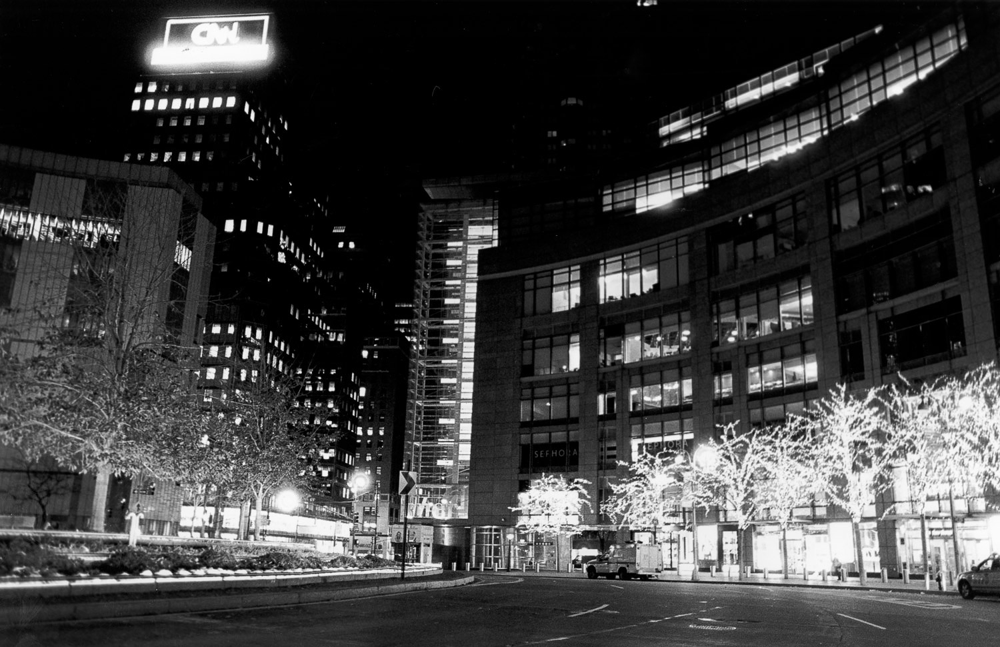
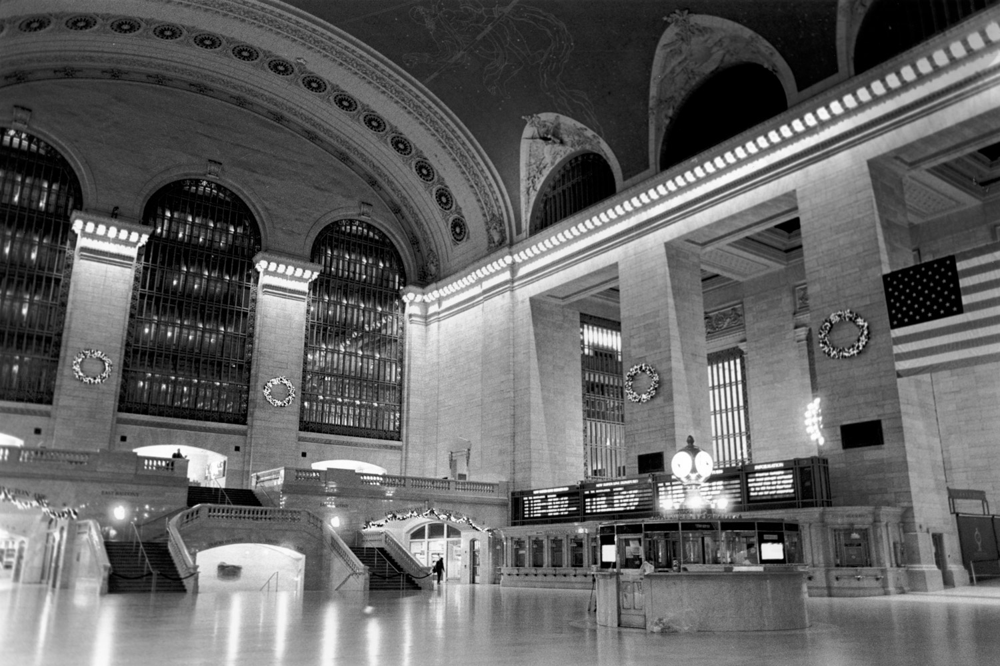
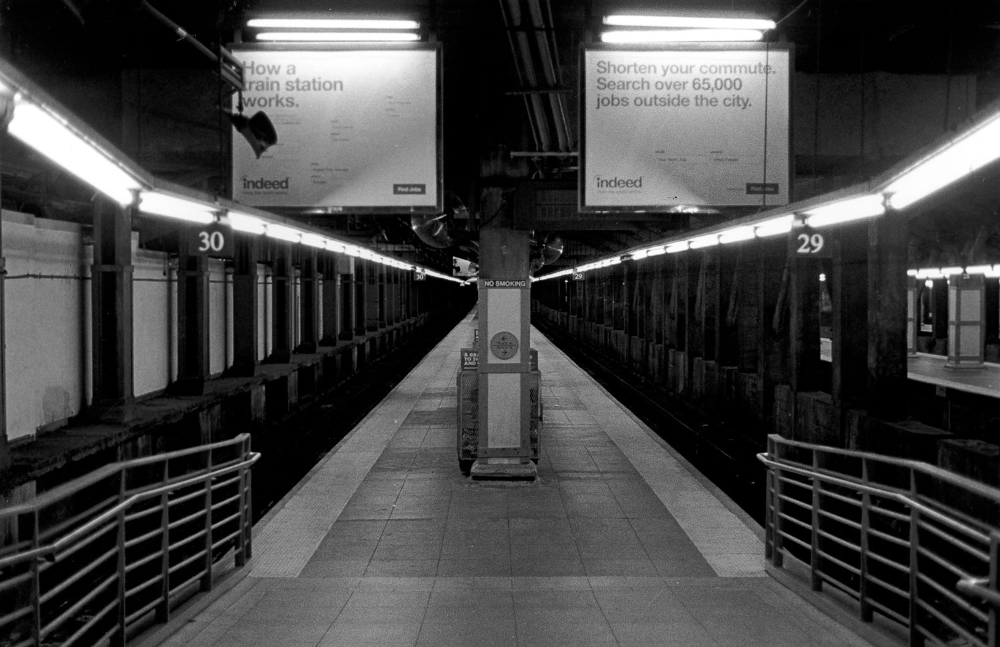
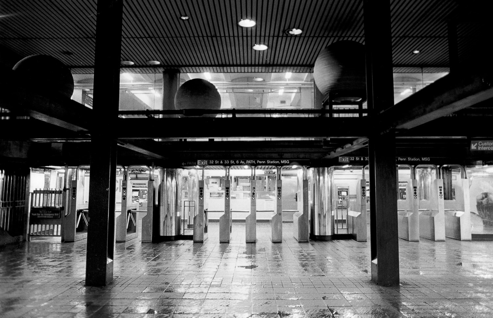
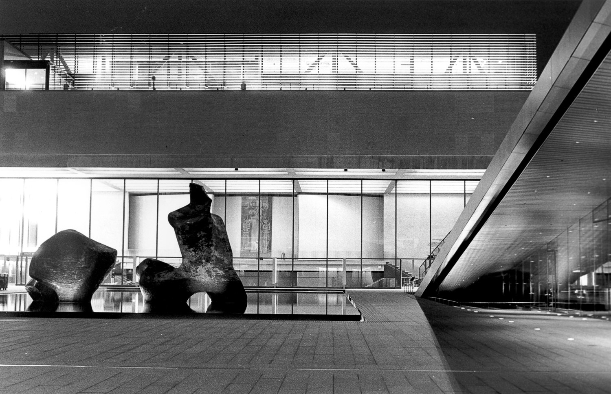
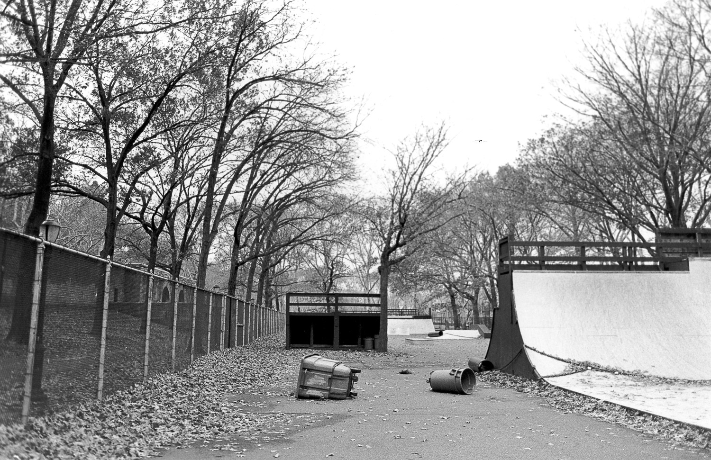
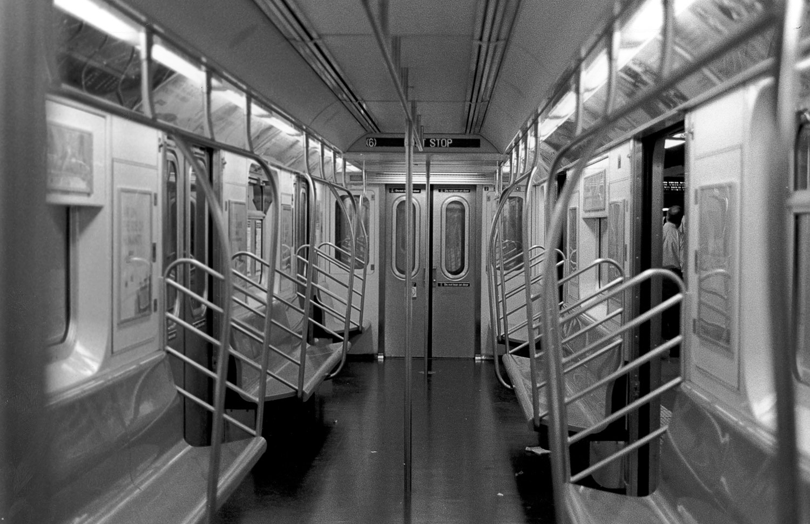
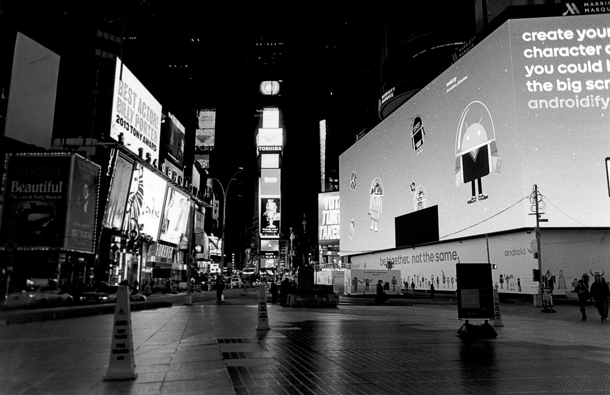
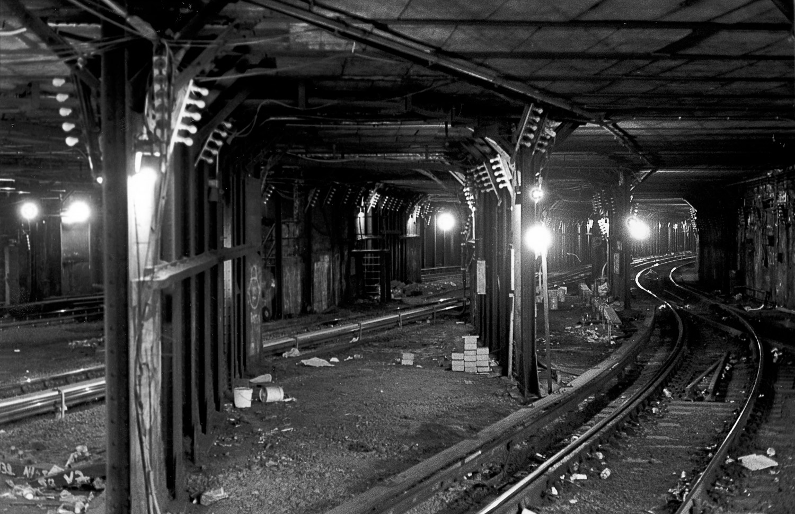
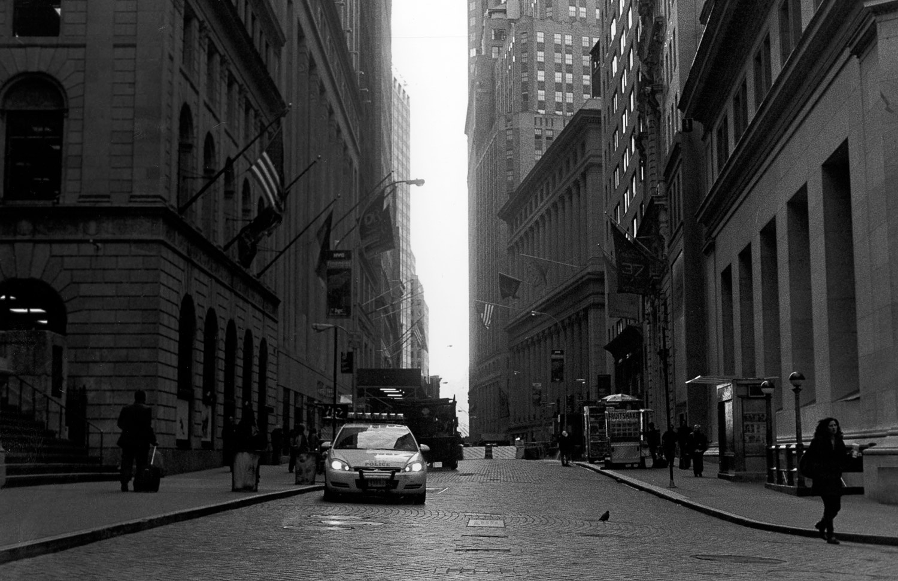